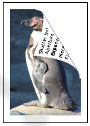

The libexif C EXIF library

- is a library written in pure portable C.
- reads and writes EXIF
metainformation from and to image files.
- is licensed under the GNU
LESSER GENERAL PUBLIC LICENSE Version 2.1 (LGPL).
- runs under POSIX
systems (e.g. GNU/Linux, xBSD, MacOS X, Windows, etc.).
Digital cameras store a surprising amount of information inside each picture
they take, in a normally invisible format known as EXIF. Everything from photo
basics like the camera shutter speed and aperture to the GPS location and
even the name of the camera owner can be hidden inside each photograph. libexif
is a library that lets you access that data from within a computer program.
Some simple applications called exif and gexif
are also supplied alongside libexif that use it to view EXIF data from the
command-line or GUI (respectively).
Documentation
See the documentation index page.
Download
Source
Download the source code archive by choosing the Github repository link for
the subproject you want (in the About
section below) and navigate to its releases page (here's a shortcut
for libexif).
Old releases are available from the historical archive.
Binaries
The libexif project supplies only source code packages. Helpful people
around the world compile the source code and provide binaries for a
number of platforms. Here is a list of some of the sites you can look.
Please report any problems with these binaries to their respective maintainers
and not to libexif project members, as we have nothing to do with
them. In particular, check the version as it may not be the latest and may
therefore suffer from known security issues.
- AIX:
Michael Perzl,
- DragonFly BSD: DragonFly project
- FreeBSD:
FreeBSD ports
- Haiku:
Haiku ports
- Linux: Chances are, exif and libexif are already supplied by your
distribution provider. Use your distribution's package install
tool to find and install them. Or, use a cross-distribution package from
Conan or
Conda-forge.
- Mac OS X:
Conan,
Fink,
Homebrew
- MidnightBSD:
MidnightBSD
- Minix:
Minix3
- OpenBSD:
OpenBSD ports
- Solaris/illumos:
Open CSW,
Open Indiana,
Unix Packages ($)
- Windows:
Conan,
Conda-forge,
Cygwin,
msys2,
VCPKG
News
- 2023-09-27:
libexif is now
REUSE compliant!
- 2021-11-25:
libexif 0.6.24 enhancement/bugfix release.
Release notes
- 2021-09-12:
libexif 0.6.23 enhancement/bugfix/security release.
CVE-2020-0198,
CVE-2020-0452,
Release notes
- 2020-08-31:
libexif-gtk 0.5.0 stability/bugfix release.
Release notes
- 2020-05-20:
exif 0.6.22 stability/bugfix release.
Release notes
- 2020-05-18:
libexif 0.6.22 stability/bugfix/security release fixes
CVE-2018-20030,
CVE-2020-13114,
CVE-2020-13113,
CVE-2020-13112,
CVE-2020-0093,
CVE-2019-9278,
CVE-2020-12767,
CVE-2016-6328,
CVE-2017-7544,
Release notes
- 2017-11-30: We have moved to Github!
- 2013-03-07:
libexif-gtk
0.4.0 stability/bugfix release.
Release notes
- 2012-07-12:
libexif
and
exif
0.6.21 security release fixes
CVE-2012-2812,
CVE-2012-2813,
CVE-2012-2814,
CVE-2012-2836,
CVE-2012-2837,
CVE-2012-2840,
CVE-2012-2841 &
CVE-2012-2845.
Release notes
Security advisory
- 2010-12-15:
libexif
and
exif
0.6.20 stability/bugfix release.
Release notes
- 2009-11-12:
libexif
and
exif
0.6.19 security/performance release
fixes CVE-2009-3895.
Release notes
Security advisory
- 2009-10-09:
libexif
and
exif
0.6.18 stability/bugfix release.
Release notes
- 2008-11-08:
libexif
and
exif
0.6.17 security/bugfix release
fixes CVE-2007-6351
and
CVE-2007-6352
as well as many other bug fixes and enhancements.
Release notes
- 2007-06-12: libexif-0.6.16 security release fixes CVE-2006-4168 aka IDEF1514.
Release notes
About the libexif project
- The libexif project maintains these five software packages:
- libexif, the EXIF parsing library.


- exif, the simple command line interface to libexif.


- libexif-gtk, the library of GTK+ based graphical user interface elements for libexif.


- gexif, the GTK+ based GUI interface to libexif-gtk.


- libexif-testsuite, a harness for regression testing of libexif and exif.
- Github project page to browse source code
- SF.net project page to report bugs
Feedback on libexif
About EXIF

 Last update: 2023-12-23
Last update: 2023-12-23